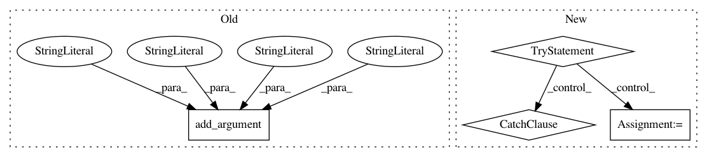

a8a37622f0ef987ca83c9b401700d0fcbece9b70,sos/__main__.py,,get_convert_parser,#,61
Before Change
help="""Destination file format, which is usually determined from
extension of `to_file` filename, but is needed if `to_file` is
unspecified.""")
parser.add_argument("-l", "--list", action="store_true",
help="""List all available converters or converters matching input parameters
and their options.""")
parser.add_argument("-v", "--verbosity", type=int, choices=range(5), default=2,
help="""Output error (0), warning (1), info (2), debug (3) and trace (4)
information to standard output (default to 2)."""),
parser.set_defaults(func=cmd_convert)
After Change
subparsers = parser.add_subparsers(title="converters (name of converter is not needed from command line)",
dest="converter_name")
for entrypoint in pkg_resources.iter_entry_points(group="sos_converters"):
try:
name = entrypoint.name
if not name.endswith(".parser"):
continue
f_format, t_format = name.rsplit(".",1)[0].split("-")
subparser = add_sub_parser(subparsers, entrypoint.load()(), name="{}-{}".format(f_format, t_format))
subparser.add_argument("from_file", metavar="FROM", nargs="?",
help="""File to be converted.""")
subparser.add_argument("to_file", metavar="TO", nargs="?",
help="""File to convert to, default to standard output if no file
name is given.""")
subparser.add_argument("-t", "--to", dest="__to_format__", metavar="TO_FORMAT",
help="""Destination file format, which is usually determined from
extension of `to_file` filename, but is needed if `to_file` is
unspecified.""")
except Exception as e:
print("Failed to load converter {}: {}".format(entrypoint.name, e))
return parser
def get_converter_formats(argv):
In pattern: SUPERPATTERN
Frequency: 3
Non-data size: 4
Instances
Project Name: vatlab/SoS
Commit Name: a8a37622f0ef987ca83c9b401700d0fcbece9b70
Time: 2016-12-12
Author: ben.bog@gmail.com
File Name: sos/__main__.py
Class Name:
Method Name: get_convert_parser
Project Name: regel/loudml
Commit Name: 12de208521da9bf7be6bd9c25551693184c3bd46
Time: 2018-05-25
Author: vianney@redmintnetwork.fr
File Name: loudml/loudml/faker.py
Class Name:
Method Name: main
Project Name: mynlp/ccg2lambda
Commit Name: a651b0632f8f9ac9dbcff6c041d29e886ce54bd1
Time: 2017-05-30
Author: pascual@nii.ac.jp
File Name: scripts/restruct.py
Class Name:
Method Name: main